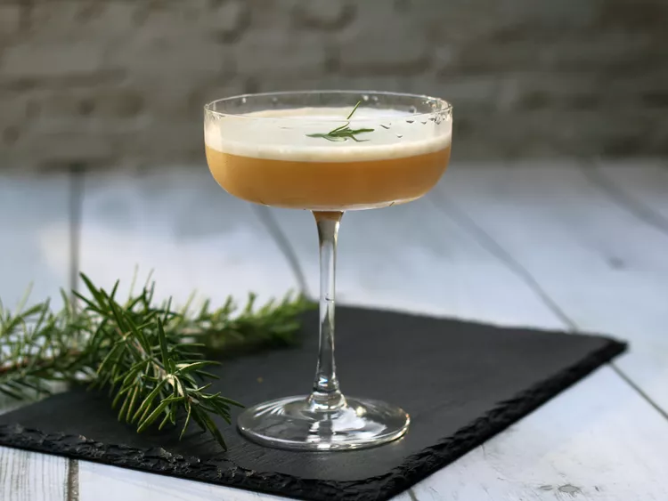

Maple Rum Flip

A classic flip cocktail shakes together liquor (or fortified wine) with sugar and a whole egg. This fall version uses rum, maple, rosemary, and nutmeg.
Ingredients
- 1.5 oz Rum (such as Appleton Estate)
- 0.5 oz orange liqueur
- 0.5 oz pure maple syrup
- 1 pasteurized whole egg
- ice as needed
- 1 sprig fresh rosemary
- freshly grated fresh nutmeg, for garnish
Directions
- Combine rum, orange liqueur, maple syrup, and egg in a cocktail shaker.
- Cover and shake until pressure builds and mixture starts to emulsify, about 45 seconds.
- Add ice and rosemary to shaker. Cover and shake until outside of shaker is frosted, about 30 seconds.
- Strain into a glass. Garnish with nutmeg.